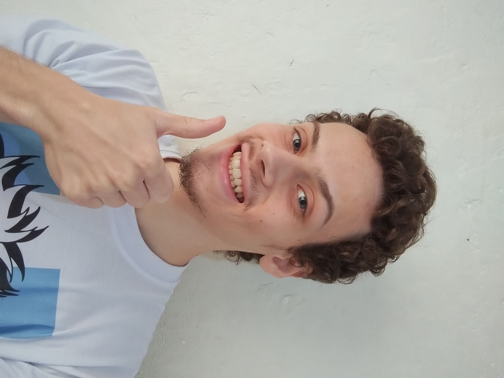
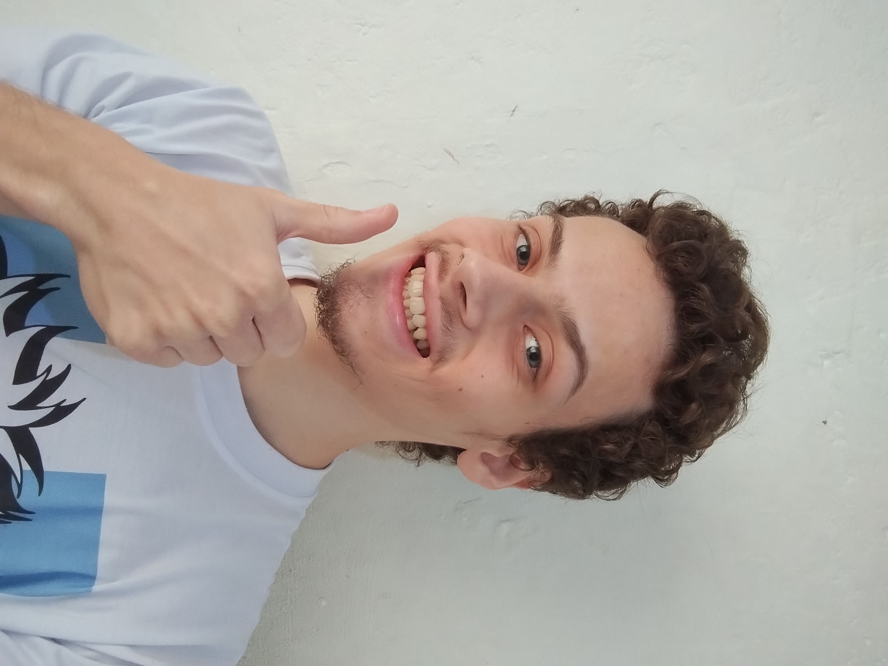

Sobre mim !
 

Me chamo Alan, tenho 20 anos. Nasci, cresci e moro em Itapeva - SP. No meu ensino fundamental I frequentei a escola municipal Prof.Helio de Morais de 2010 a 2014, uma escola que me proporcionou diversos momentos que guardo em minha memória e que lembro até hoje,como jogar Sonic the Fighters no intervalo com alunos de outras turmas que eu nem conhecia e participar dos bingos que ocorriam, Eu tive excelentes professoras como a marcelle,tania e vilma. conhecer amigos que tenho contato até hoje e as festinhas que ocorriam nos domingos em que eu ia com a minha familia. Em minha familia tenho uma irmã caçula que se chama Emili e o irmão mais velho Adriano, A minha mãe Judite e o meu pai Norival.
Em meu ensino fundamental II e ensino médio frequentei a escola estadual Prof.Zulmira de Oliveira de 2015 a 2021. Depois de concluir o ensino médio resolvi fazer umas produções musicais utilizando o meu mini pc, produzindo algumas batidas e remixagem de músicas através do software FL Studio que é uma estação de trabalho de áudio digital. Eu realizei quatro projetos em 2021 e mais quatro em 2022. Em 2023 estragou o carregador do mini pc e então até hoje ele está parado,atualmente estou com um computador novo mas não o utilizo para as produções musicais. Quando eu estiver trabalhando na área da saúde e ganhando dinheiro,pretendo utiliza-lo para estudar em uma faculdade de música e fazer um curso de técnico em som.
De 2023 a 2024 frequentei o curso técnico em química da Etec Dr. Demétrio Azevedo Jr, atualmente frequento os cursos técnico em enfermagem e de desenvolvimento de sistemas. Eu possuo interesse em músicas de artistas como Suzi Quatro, Joan Jett, Rita lee e bandas como AC/DC, The Beatles e Led Zeppelin. Gosto de livros de autores como Machado de Assis e Platão. Gosto de estudar sobre diversos assuntos como saúde e tecnologia, Gosto de praticar atividades e exercícios físicos como correr. Sou uma pessoa introvertida, crítica, atenciosa e observadora e que não gosta de barulho. Atualmente, estou focado em concluir meus cursos e planejo trabalhar na área da saúde, especificamente na enfermagem, e estudar música. Atualmente faço estágio supervisionado em enfermagem.